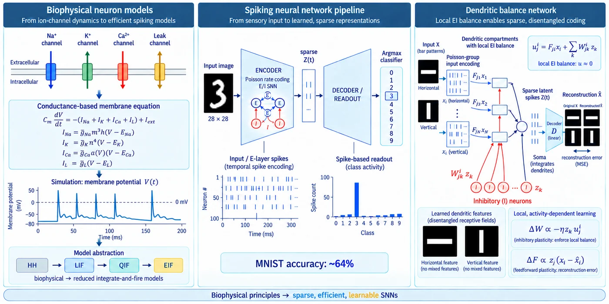

Computational Neuroscience
Biophysical principles for sparse, learnable spiking neural networks
From ion-channel dynamics to efficient spiking models — a pipeline that runs from sensory input to learned, sparse representations.

From ion channels to spiking models
The starting point is the biophysics of the membrane. I built conductance-based neuron models with Na+, K+, Ca2+, and leak channels, where the membrane potential follows the conductance-based equation and each current carries its own gating dynamics and reversal potential. Simulating V(t) reproduces the familiar spiking behavior — and also shows how expensive full Hodgkin–Huxley dynamics are once you want a whole network.
That motivates the model-abstraction ladder: from the biophysical HH model down to reduced integrate-and-fire variants (LIF, QIF, EIF), trading ion-channel detail for efficiency while keeping the spiking behavior that matters for computation.
A spiking pipeline from sensory input to readout
On top of these neuron models I built an end-to-end spiking pipeline for MNIST. A 28×28 input image is converted into spike trains by Poisson rate coding and fed into an E/I spiking encoder, which produces a sparse latent activity pattern Z(t). A decoder/readout stage turns that activity into class scores, with an argmax classifier making the final decision from spike counts.
The network classifies with temporal spike encoding rather than dense analog activations — the E-layer spikes stay sparse in time, and the readout is purely spike-based. This from-scratch pipeline reaches ~64% MNIST accuracy, a baseline that reflects how much harder learning becomes when every signal is a discrete spike.
Dendritic balance network
The third part asks what dendritic structure buys you. In the dendritic balance network, each dendritic compartment integrates feedforward drive and recurrent inhibition, uji = Fjixi + Σk Wjkizk, under a local excitatory–inhibitory balance condition (u ≈ 0). Inhibitory neurons keep dendritic currents near zero, so the soma only spikes for inputs that genuinely add information — the latent spikes Z(t) stay sparse, and a linear decoder D can reconstruct the input from them.
The result is a sparse, disentangled code: learned dendritic features separate into clean receptive fields (horizontal and vertical bar features), with no mixed features — each neuron owns a distinct structure in the input rather than a blend of several.
Local, activity-dependent learning
Both sets of weights learn from purely local signals. Inhibitory plasticity follows ΔW ∝ −ηzkuji, which enforces the local EI balance; feedforward plasticity follows ΔF ∝ zj(xi − x̂i), driven by the reconstruction error. No global error signal is required — balance and reconstruction fall out of rules each synapse can compute on its own.
Takeaway
Biophysical principles — conductance-based dynamics, EI balance, local plasticity — are not just realism for its own sake. They give spiking networks a route to representations that are sparse, efficient, and learnable at the same time.